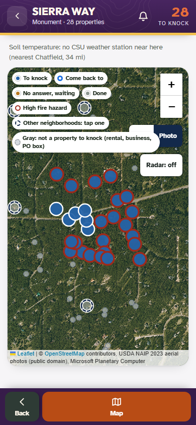
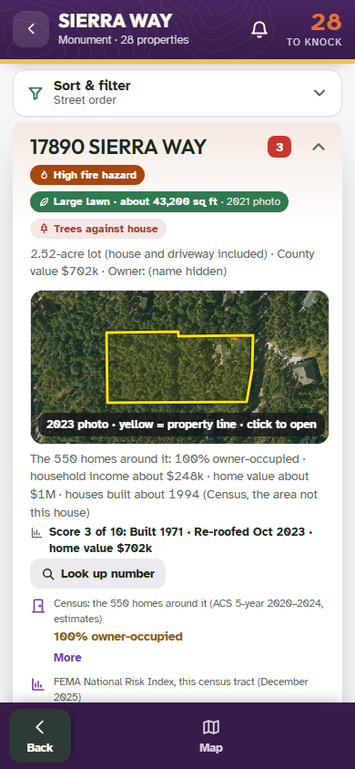
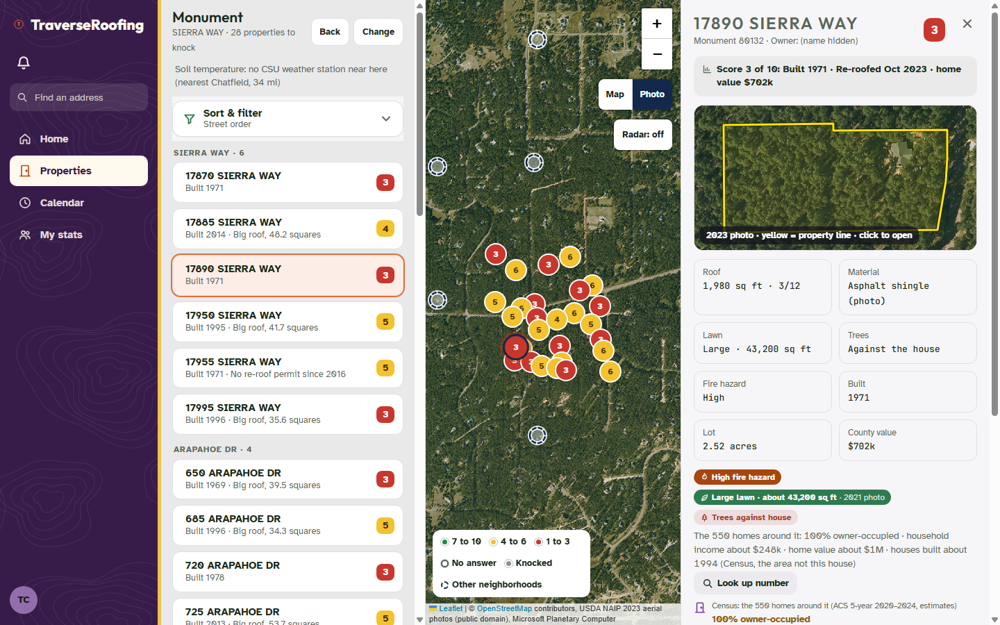

Branch commits: the tile cache (traverse/app/api/satcache.php, the page's four tile layers, deploy-app.sh) and the storm job (stormRefresh in rounds.php). Owner names on the pictures are blanked by the test before each shot.
Each column is a brand-new browser profile (no browser cache, so it stands for a different phone). "Before" is today's page, tiles straight from Microsoft Planetary Computer. "After, first" is the new page with our server's cache empty; "second" and "third" are two more fresh browsers after it. Screen filled = first tile asked for to last tile in; below it the median time per tile. Same street every time (Sierra Way, Monument), measured 2026-10-31 06:14 UTC.
| Screen | Tiles | Before, first | Before, second | After, first (cache empty) | After, second phone | After, third phone |
|---|---|---|---|---|---|---|
| Phone 390x844: door map, Photo look | 9 | 3.63 s 2533 ms | 3.46 s 2645 ms | 5.40 s 3469 ms | 0.02 s 14 ms | 0.02 s 13 ms |
| Phone: the lot photo in the door card | 4 | 3.76 s 3392 ms | 3.52 s 1755 ms | 2.72 s 2717 ms | 0.01 s 11 ms | 0.01 s 9 ms |
| Computer 1440x900: door map, Photo look | 15 | 6.10 s 4036 ms | 5.89 s 4237 ms | 4.74 s 2017 ms | 0.03 s 17 ms | 0.03 s 18 ms |
| Computer: the lot preview in the door panel | 3 | 5.33 s 5205 ms | 6.00 s 4782 ms | 2.01 s 1935 ms | 0.03 s 24 ms | 0.01 s 10 ms |
How to read it. Planetary Computer draws every tile again on every request, so "before" is just as slow the second time (2.5-6 s a screen). With the cache, the second phone's screen comes off our disk: 10-30 ms here. That number is on the laptop itself, so it leaves out the phone's own connection: on the live server a cached tile still has to travel (about 150 KB each, 1.4 MB for a phone screen), but it no longer waits 0.5-2 s per tile to be drawn. The first view through the cache is about as slow as before (it fetches the same tiles, plus one server-side register of the statewide search per day); the test server here runs six PHP workers, so on the phone screen 3 of the 9 tiles queued (5.4 s against 3.5 s). The live server's PHP pool is larger.
The phone map pictures before and after are byte-identical PNG files (same md5): the same photos, the same query.



../api/satcache.php?l=co2023&z=&x=&y= (the statewide mosaic) and ?i=co_m_...&z=&x=&y= (one NAIP photo: lot preview, aerial view, small aerial). One endpoint for all six installs and the client installs; tiles kept in traverse-shared/satcache/t/<layer or photo>/z/x/y.png, outside public_html.co20xx or a co_m_ photo id, zoom 12-19, and the tile must touch Colorado's box. Anything else is refused (400/404) without fetching anything. Elsewhere (the Lexington SC sample) the page still goes straight to Planetary Computer, as today.pc1.<expiry>.<hex>, checked 31 Oct). So tiles are kept under the search (state + year), the server registers it itself and keeps the id until an hour before it expires, registers again on a 410, and falls back to the 9 Oct id. The page's own register and its "Aerial photos are not available here / cannot load right now" line are unchanged.Cache-Control: public, max-age=31536000, immutable (the address names the photo and its year).usage.json, events in satcache.log, daily hit/miss counts in stats/; php satcache.php usage prints them.Refused without fetching
PASS another state: 400
PASS a year outside 2010-2039: 400
PASS a photo outside Colorado: 400
PASS a path: 400
PASS zoom 11: 400
PASS zoom 20: 400
PASS x off the world: 400
PASS a tile outside Colorado: 404
PASS no y: 400
PASS both kinds: 400
PASS none of them reached Planetary Computer
PASS POST refused
Miss, then hit
PASS first request: fetched (miss), image/png
PASS a year-long, immutable browser cache header
PASS the server registered the statewide search once
PASS second request: from disk (hit), the same bytes
PASS Planetary Computer asked for that tile once
PASS one photo (lot preview): miss, then hit
PASS the photo request upstream carries the page's own query and item
PASS kept under the layer and the photo id, by z/x/y
PASS no half-written file left
Several phones asking for the same new tile at once
PASS all six get the same picture
PASS one whole file on disk
No photo here (404)
PASS Planetary Computer's 404 passes on as 404
PASS remembered: the second ask does not go upstream
The kept id expires early (410)
PASS 410 -> registered again (2 registers) and the tile still came
Register down: the 9 Oct id
PASS the tile came through SAT_FALLBACK
Planetary Computer down
PASS new tile: 502, not cached by the browser
PASS nothing stored
PASS tiles already kept still serve
PASS the failure is in satcache.log
Disk cap (1 MB in this test; tiles here are 200 KB): oldest-used first
PASS usage.json matches the disk (0.95 MB, 5 tiles)
PASS under the cap after the clean-ups (0.95 MB, 5 tiles; each clean-up goes to 85%)
PASS usage.json recounted to the disk
PASS the newest tiles stay
PASS the oldest-used went first
PASS the clean-up is in satcache.log
A visitor fetching too much
PASS more than the limit of new tiles in 5 minutes: 429
PASS tiles on disk are never limited
Numbers
PASS php satcache.php usage: 0.8 MB, 4 tiles, today {"hit":9,"miss":38,"none":2,"error":2}
satcache-test: 40 passed, 0 failed
Roofing's current data from editions/dist/traverse-data/rounds (the same as live on 31 Oct: 407 towns, 1,237,418 doors, 2,976,434 hail entries in 85 MB of files), a stand-in NOAA archive serving two new days, and the job run as the cron runs it (tools/storm-update.php --force) at the live limit, memory_limit=768M. Peak = PHP's real peak (memory_get_peak_usage(true), what the limit is checked against). The old code was also run with room to spare to get the reference files.
| Scenario | New code at 768M | Old code at 768M | Old code, 3500M (reference) | Files out |
|---|---|---|---|---|
| A Today's data + two new days, the first the 2023-06-22 storm (the biggest on record) | 312 MB 10.7 s | out of memory after 5.9 s | 1352 MB 10.7 s | identical: 410 hail files + storm-refresh.json (73 changed by the run) |
| B A + an old storm day the keep rule drops (every town's hail file opened: the 2027-04-22 case) | 310 MB 13.1 s | out of memory after 7 s | 1820 MB 17.8 s | identical: 410 hail files + storm-refresh.json (75 changed by the run) |
| C B + six more kept storm days on every door of every town (10.4 million entries, 3.5x today) | 470 MB 19.8 s | out of memory after 6.9 s | not run (would need several GB) | checked: new days in, synthetic days kept, old day dropped; Denver 995,664 entries |
Found while testing: since Group 3 the old job does not only fail at the April drop: with 407 towns it already runs out of memory on the first big storm day (scenario A). The new job holds each town's doors packed (about 35 bytes a door), each day's hail as its squares of 0.75 in or more, the hits as packed per-town lists, and opens, merges, keep-filters, writes and frees one hail file at a time. Its peak is set by the biggest single file (Denver's door file, 232 MB decoded), not by how many towns or how much history there is.
archive: 2026-10-29, 2026-10-30 (first = the 2023-06-22 storm file)
== A
new code @768M: ok · peak 312 MB · 10.7 s
hail through 2026-10-30; added 2026-10-29, 2026-10-30; 0 old storm day(s) dropped
PASS A: the new code finishes under the live limit (peak 312 MB of 768, 10.7 s)
PASS A: inside the job's own 120 s limit
old code @768M: FAILED: Allowed memory size of 805306368 bytes exhausted (tried to allocate 4096 bytes) · peak 768 MB · 5.9 s
old code @3500M (reference): ok · peak 1352 MB · 10.7 s
hail through 2026-10-30; added 2026-10-29, 2026-10-30; 0 old storm day(s) dropped
PASS A: reference run of the old code finished
PASS A: the new code's 410 hail files + storm-refresh.json equal the old code's byte for byte (73 files changed by the run)
== B
new code @768M: ok · peak 310 MB · 13.1 s
hail through 2026-10-30; added 2026-10-29, 2026-10-30; 1 old storm day(s) dropped
PASS B: the new code finishes under the live limit (peak 310 MB of 768, 13.1 s)
PASS B: inside the job's own 120 s limit
old code @768M: FAILED: Allowed memory size of 805306368 bytes exhausted (tried to allocate 4096 bytes) · peak 768 MB · 7 s
old code @3500M (reference): ok · peak 1820 MB · 17.8 s
hail through 2026-10-30; added 2026-10-29, 2026-10-30; 1 old storm day(s) dropped
PASS B: reference run of the old code finished
PASS B: the new code's 410 hail files + storm-refresh.json equal the old code's byte for byte (75 files changed by the run)
== C
synthetic history: 7,424,508 entries added (6 kept days on each of 407 towns' doors)
new code @768M: ok · peak 470 MB · 19.8 s
hail through 2026-10-30; added 2026-10-29, 2026-10-30; 1 old storm day(s) dropped
PASS C: the new code finishes under the live limit (peak 470 MB of 768, 19.8 s)
PASS C: inside the job's own 120 s limit
old code @768M: FAILED: Allowed memory size of 805306368 bytes exhausted (tried to allocate 4096 bytes) · peak 768 MB · 6.9 s
PASS C: new days in, synthetic kept days kept, the old minor day dropped (242 storm days)
PASS C: Denver's file now 995,664 entries, through 2026-10-30
storm-mem-test: 12 passed, 0 failed
The 30 Oct set (run-1030.sh) in edition mode and Sixfold mode, plus lotprev, aerial and the tile timing test in both modes, each on a fresh copy of ptest-1030's data. "Before" is HEAD (b309753a), "after" this branch.
== edition (terms pre-accepted)
reps-test.mjs: reps-test: 37 passed, 0 failed
batch1029-ui-test.mjs: batch1029-ui-test: 43 passed, 0 failed
rolepreview-test.mjs: 9 passed, 0 failed
accounts-test.mjs: 29 passed, 1 failed
FAILED: timeout: code card
payments-test.mjs: 20 passed, 0 failed
wx-test.mjs: 2 passed, 5 failed
FAIL one NWS alerts request for the whole install, ?area=CO (0: -)
FAIL the zone-only warning’s outline fetched once (forecast/COZ082)
FAIL one wildfire query, over Colorado’s box (not around Monument)
FAIL the shared copies are in traverse-shared/weather/
FAILED: Error: ENOENT: no such file or directory, lstat 'C:\Users\SURGEI~1\AppData\Local\Temp\claude\c--Users-Surge-Inc-Desktop-claude-test-2\db3e1153-072f-46a3-b860-134f689b5a09\scratchpad\ptest-satcache\sixfold-data\rounds\alerts-cache.json'
lotprev-test.mjs: 0 passed, 1 failed
FAILED: timeout: tools
aerial-test.mjs: 9 passed, 0 failed
satcache-ui-test.mjs: 6 passed, 0 failed
viewas-test.mjs (edition): FAIL list has office, quote and manager accounts: Test Crew/crew, Test Manager/manager, Test Office/office, Test Rep/crew
== edition (terms not pre-accepted)
roles-test.mjs: 75 passed, 0 failed
roles-ui-test.mjs: 4 passed, 1 failed
FAILED: timeout: code card
billlock-test.mjs: billlock-test: 101 passed, 7 failed
FAIL the rep's doors are paused: "Door data is paused: your company's account needs attention."
FAIL a door mark is refused, with the admin's words
FAIL the checklist: pay, team, email and payments, import
FAIL a team member keeps the app; the bar: "Door data is paused: your company's account needs attention."
FAIL Routes: "Door data is paused" (no Billing button for a rep)
FAIL Billing tells Traverse door data is paused for them
FAILED: Error: timeout: more time shown
== perms (matrix)
differs: admin me
before: 200 communities,doors,fq,lock,mail,mailFrom,ok,pays,repSend,results,role,runsteam,sign,sq,sub,super,terms,viewing,walker,wonlost role="admin" sub="" walker=false pays=false doors=false repSend=true runsteam=false
now: 200 communities,doors,fq,lock,mail,mailFrom,ok,onteam,pays,repSend,results,role,runsteam,sign,sq,sub,super,terms,viewing,walker,wonlost role="admin" sub="" walker=false pays=false doors=false repSend=true runsteam=false
differs: admin jobs {"from":"2026-10-31","to":"2026-11-06"}
before: 200
now: undefined
differs: admin schedview {"from":"2026-10-31","to":"2026-11-06"}
before: 200
now: undefined
differs: admin area {"region":"englewood"}
before: 404 No such neighbourhood.
now: 404 No such neighborhood.
differs: admin myschedule {"from":"2026-10-31","to":"2026-11-06"}
before: 200
now: undefined
differs: admin schedview {"from":"2026-10-31","to":"2026-11-02"}
before: 200
now: undefined
differs: manager me
before: 200 communities,doors,fq,lock,mail,mailFrom,ok,pays,repSend,results,role,runsteam,sign,sq,sub,super,terms,viewing,walker,wonlost role="manager" sub="" walker=false pays=false doors=false repSend=true runsteam=false
now: 200 communities,doors,fq,lock,mail,mailFrom,ok,onteam,pays,repSend,results,role,runsteam,sign,sq,sub,super,terms,viewing,walker,wonlost role="manager" sub="" walker=false pays=false doors=false repSend=true runsteam=false
differs: manager jobs {"from":"2026-10-31","to":"2026-11-06"}
before: 403 Not allowed.
now: undefined
FAIL with nothing saved, 180 answers (6 roles x 30 screens) match the code before this change
FAIL doors.see off for crew: area refused (404 -> 403: Properties are switched off for this account. An admin turns them on i)
FAIL Sixfold: no list, no perms on me
FAIL grouped: Properties, Leads and pipeline, Quotes, Agreements and payments, Jobs and schedule, Customers, Team, Messages, Settings
FAIL in Spanish: Roles y permisos | Lo que puede hacer cada rol. Abre un rol para cambiarlo. El administrador
perms-test: 119 passed, 5 failed
perms-test: 119 passed, 5 failed
== sixfold
reps-test.mjs: reps-test: 37 passed, 0 failed
batch1029-ui-test.mjs: batch1029-ui-test: 43 passed, 0 failed
roles-test.mjs: 75 passed, 0 failed
roles-ui-test.mjs: 4 passed, 1 failed
FAILED: timeout: code card
rolepreview-test.mjs: 9 passed, 0 failed
accounts-test.mjs: 26 passed, 1 failed
FAILED: timeout: tools
payments-test.mjs: 20 passed, 0 failed
viewas-test.mjs:
wx-test.mjs: 2 passed, 5 failed
FAIL one NWS alerts request for the whole install, ?area=CO (0: -)
FAIL the zone-only warning’s outline fetched once (forecast/COZ082)
FAIL one wildfire query, over Colorado’s box (not around Monument)
FAIL the shared copies are in traverse-shared/weather/
FAILED: Error: ENOENT: no such file or directory, lstat 'C:\Users\SURGEI~1\AppData\Local\Temp\claude\c--Users-Surge-Inc-Desktop-claude-test-2\db3e1153-072f-46a3-b860-134f689b5a09\scratchpad\ptest-satcache\sixfold-data\rounds\alerts-cache.json'
== sixfold extras
lotprev-test.mjs: 10 passed, 0 failed
aerial-test.mjs: 9 passed, 0 failed
satcache-ui-test.mjs: 6 passed, 0 failed
== exhausted in php log: 0
== edition (terms pre-accepted)
reps-test.mjs: reps-test: 37 passed, 0 failed
batch1029-ui-test.mjs: batch1029-ui-test: 13 passed, 2 failed
FAIL with Email connected the form screen says it sends from inside the app
FAILED: timeout: sent toast
rolepreview-test.mjs: 9 passed, 0 failed
accounts-test.mjs: 29 passed, 1 failed
FAILED: timeout: code card
payments-test.mjs: 20 passed, 0 failed
wx-test.mjs: 2 passed, 5 failed
FAIL one NWS alerts request for the whole install, ?area=CO (0: -)
FAIL the zone-only warning’s outline fetched once (forecast/COZ082)
FAIL one wildfire query, over Colorado’s box (not around Monument)
FAIL the shared copies are in traverse-shared/weather/
FAILED: Error: ENOENT: no such file or directory, lstat 'C:\Users\SURGEI~1\AppData\Local\Temp\claude\c--Users-Surge-Inc-Desktop-claude-test-2\db3e1153-072f-46a3-b860-134f689b5a09\scratchpad\ptest-satcache\sixfold-data\rounds\alerts-cache.json'
lotprev-test.mjs: 0 passed, 1 failed
FAILED: timeout: tools
aerial-test.mjs: 9 passed, 0 failed
satcache-ui-test.mjs: 6 passed, 0 failed
viewas-test.mjs (edition): FAIL list has office, quote and manager accounts: Test Crew/crew, Test Manager/manager, Test Office/office, Test Rep/crew
== edition (terms not pre-accepted)
roles-test.mjs: 75 passed, 0 failed
roles-ui-test.mjs: 4 passed, 1 failed
FAILED: timeout: code card
billlock-test.mjs: billlock-test: 101 passed, 7 failed
FAIL the rep's doors are paused: "Door data is paused: your company's account needs attention."
FAIL a door mark is refused, with the admin's words
FAIL the checklist: pay, team, email and payments, import
FAIL a team member keeps the app; the bar: "Door data is paused: your company's account needs attention."
FAIL Routes: "Door data is paused" (no Billing button for a rep)
FAIL Billing tells Traverse door data is paused for them
FAILED: Error: timeout: more time shown
== perms (matrix)
differs: admin me
before: 200 communities,doors,fq,lock,mail,mailFrom,ok,pays,repSend,results,role,runsteam,sign,sq,sub,super,terms,viewing,walker,wonlost role="admin" sub="" walker=false pays=false doors=false repSend=true runsteam=false
now: 200 communities,doors,fq,lock,mail,mailFrom,ok,onteam,pays,repSend,results,role,runsteam,sign,sq,sub,super,terms,viewing,walker,wonlost role="admin" sub="" walker=false pays=false doors=false repSend=true runsteam=false
differs: admin jobs {"from":"2026-10-31","to":"2026-11-06"}
before: 200
now: undefined
differs: admin schedview {"from":"2026-10-31","to":"2026-11-06"}
before: 200
now: undefined
differs: admin area {"region":"englewood"}
before: 404 No such neighbourhood.
now: 404 No such neighborhood.
differs: admin myschedule {"from":"2026-10-31","to":"2026-11-06"}
before: 200
now: undefined
differs: admin schedview {"from":"2026-10-31","to":"2026-11-02"}
before: 200
now: undefined
differs: manager me
before: 200 communities,doors,fq,lock,mail,mailFrom,ok,pays,repSend,results,role,runsteam,sign,sq,sub,super,terms,viewing,walker,wonlost role="manager" sub="" walker=false pays=false doors=false repSend=true runsteam=false
now: 200 communities,doors,fq,lock,mail,mailFrom,ok,onteam,pays,repSend,results,role,runsteam,sign,sq,sub,super,terms,viewing,walker,wonlost role="manager" sub="" walker=false pays=false doors=false repSend=true runsteam=false
differs: manager jobs {"from":"2026-10-31","to":"2026-11-06"}
before: 403 Not allowed.
now: undefined
FAIL with nothing saved, 180 answers (6 roles x 30 screens) match the code before this change
FAIL doors.see off for crew: area refused (404 -> 403: Properties are switched off for this account. An admin turns them on i)
FAIL Sixfold: no list, no perms on me
FAIL grouped: Properties, Leads and pipeline, Quotes, Agreements and payments, Jobs and schedule, Customers, Team, Messages, Settings
FAIL in Spanish: Roles y permisos | Lo que puede hacer cada rol. Abre un rol para cambiarlo. El administrador
perms-test: 119 passed, 5 failed
perms-test: 119 passed, 5 failed
== sixfold
reps-test.mjs: reps-test: 37 passed, 0 failed
batch1029-ui-test.mjs: batch1029-ui-test: 3 passed, 1 failed
FAILED: timeout: email quick way
roles-test.mjs: 75 passed, 0 failed
roles-ui-test.mjs: 4 passed, 1 failed
FAILED: timeout: code card
rolepreview-test.mjs: 9 passed, 0 failed
accounts-test.mjs: 26 passed, 1 failed
FAILED: timeout: tools
payments-test.mjs: 20 passed, 0 failed
viewas-test.mjs:
wx-test.mjs: 2 passed, 5 failed
FAIL one NWS alerts request for the whole install, ?area=CO (0: -)
FAIL the zone-only warning’s outline fetched once (forecast/COZ082)
FAIL one wildfire query, over Colorado’s box (not around Monument)
FAIL the shared copies are in traverse-shared/weather/
FAILED: Error: ENOENT: no such file or directory, lstat 'C:\Users\SURGEI~1\AppData\Local\Temp\claude\c--Users-Surge-Inc-Desktop-claude-test-2\db3e1153-072f-46a3-b860-134f689b5a09\scratchpad\ptest-satcache\sixfold-data\rounds\alerts-cache.json'
== sixfold extras
lotprev-test.mjs: 10 passed, 0 failed
aerial-test.mjs: 9 passed, 0 failed
satcache-ui-test.mjs: 6 passed, 0 failed
== exhausted in php log: 0
The one difference, batch1029-ui-test, is not this branch. Every other line is identical, the permissions matrix included. batch1029-ui-test passed in the "before" run and failed in the "after" run, so it was run again on fresh data each time: alone on this branch it passes 43 of 43; run straight after reps-test (the full set's order) it fails with the same two lines ("with Email connected the form screen says it sends from inside the app", "timeout: sent toast") on HEAD and on this branch alike; alone in Sixfold mode it fails on both too. It depends on timing and order, not on these changes. The fails seen on both sides (accounts "code card", wx-test's missing weather stand-in, roles-ui, billlock, perms 5, lotprev on the edition's computer home) are older test expectations, the same before and after.
lotprev-test and aerial-test looked for "planetarycomputer" in the tile address; their copies here accept satcache.php too (the only change to any suite).
cd "C:/Users/Surge Inc/Desktop/claude test 2/traverse/app" && node i18n/sync-es.cjs && node ../editions/build-editions.cjs && node ../editions/minify-page.cjs
bash traverse/ops/deploy-app.sh satcache-storm --check # satcache.php shows as new
bash traverse/ops/deploy-app.sh satcache-storm # ships api/satcache.php with the pages and rounds.php; checks it answers 400 to a bad tile
# then, from the server: a tile twice (first ~1-2 s, second fast, X-Satcache miss then hit)
bash /c/Users/SURGEI~1/.ssh/sg.sh trav 'for i in 1 2; do curl -s -o /dev/null -D - -w "%{time_total}s\n" "https://traverseplatforms.com/api/satcache.php?l=co2023&z=17&x=27310&y=49744" | grep -i -E "x-satcache|^[0-9.]+s"; done; php ~/www/traverseplatforms.com/public_html/api/satcache.php usage'
# optional: Roofing's storm job by hand (otherwise it runs when an admin opens Hail, at most every 12 hours; without --force it does nothing inside 12 h)
bash /c/Users/SURGEI~1/.ssh/sg.sh trav 'php ~/www/traverseplatforms.com/traverse-tools/storm-update.php --api=traverse-rounds.php'